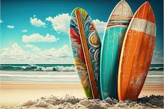

Somos apaixonados pelo surf e tudo o que ele representa: liberdade, conexão com a natureza e uma comunidade vibrante e acolhedora. Fundado por entusiastas do surf, nosso site nasceu do desejo de compartilhar essa paixão com o mundo.
Nossa missão é fornecer recursos valiosos para surfistas de todos os níveis, desde iniciantes até profissionais. Acreditamos que o surf vai além de um simples esporte; é um estilo de vida que inspira, desafia e conecta pessoas de todas as origens.
Nossos colaboradores são especialistas em suas áreas, trazendo conhecimento prático e experiência pessoal para cada artigo e vídeo que produzimos. Estamos comprometidos em oferecer conteúdo de alta qualidade e relevância para todos os amantes do surf.
Comprometidos com a Comunidade do Surf
Aqui no nosso site, valorizamos profundamente a comunidade do surf. Acreditamos que o surf não é apenas um esporte individual, mas sim uma conexão global que une pessoas de diferentes culturas, origens e idades em torno de uma paixão compartilhada.
Nosso compromisso vai além das ondas. Estamos dedicados a promover uma cultura de respeito, inclusão e sustentabilidade dentro da comunidade do surf, trabalhando para garantir que todos tenham acesso igualitário e seguro aos benefícios que o surf pode oferecer.
Junte-se a nós nesta jornada emocionante enquanto exploramos as maravilhas do surf juntos!